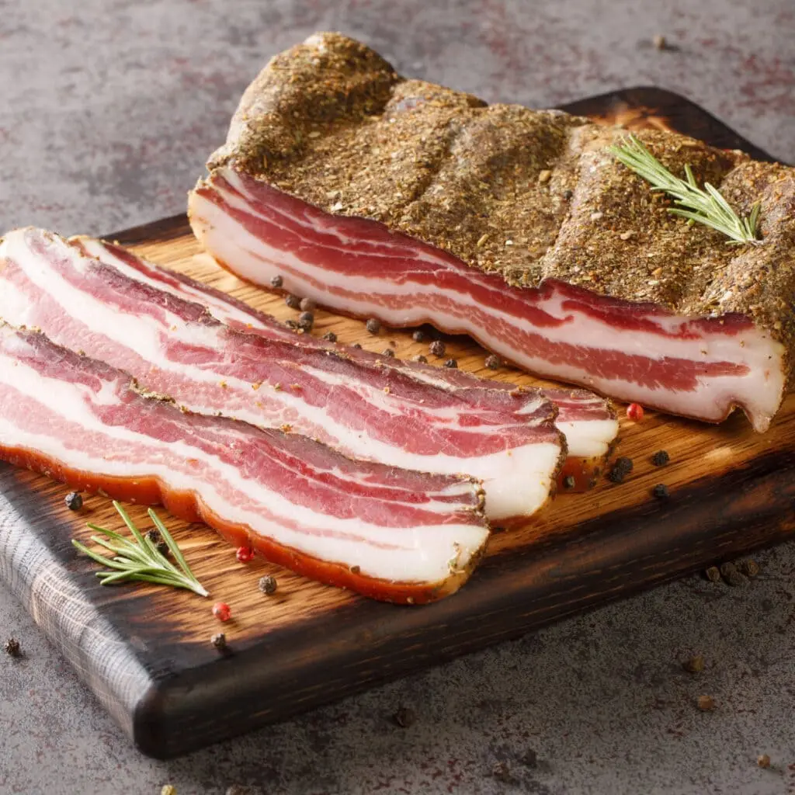

- Koka spaghettin ca 3 minuter kortare än vad det står på förpackningen.
- Skär pancettan i små bitar.
- Stek pancettan i en wokpanna eller en stekpanna med höga kanter utan fett tills den blir krispig. lyft upp och lägg åt sidan. Låt fettet ligga kvar i pannan.
- Vispa ihop äggulorna med den fint rivna osten och rikligt med nymalen svartpeppar i en skål.
- Sätt på värmen igen på pannan med stekfettet, häll i ca 3 dl av pastavattnet och låt koka.
- Häll av spagettin och lägg i pannan med pancettan. Precis som när man kokar risotto i en buljong ska pastan få koka i stekfettet. Låt koka ca 2-3 minuter och rör om hela tiden, det gör att stärkelsen från pastan utsöndras och det blir en krämig sås.
- När vattnet börjar koka in och det är någon matsked kvar, ta pannan från värmen. Tillsätt äggsmeten, rör runt tills det blir krämigt, tillsätt lite vatten om det blir torrt. Smaka av med salt och peppar.